Gez is a differential-drive robot designed and built from scratch. The system runs ROS 2 Humble on a Raspberry Pi 4 for high-level navigation and SLAM, while an ESP32 handles real-time motor control with discrete PID, encoder-based odometry, and dual-core RTOS — connected via micro-ROS over USB serial. The project covers everything from hardware design and low-level signal processing to autonomous navigation.
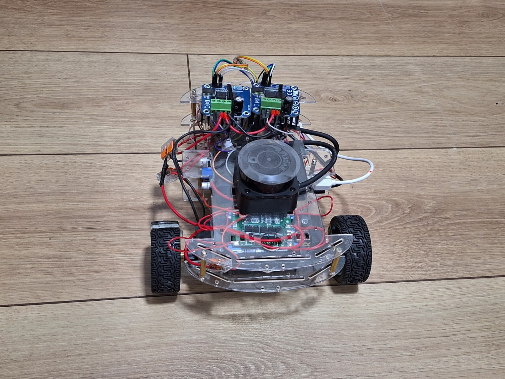
The system uses a dual-computer architecture, standard in professional robots like TurtleBot and Husky. The ESP32 handles real-time motor control because Linux (on the Raspberry Pi) is not deterministic enough for precise PID loops. The Raspberry Pi handles ROS 2, sensor data (LiDAR), and future Nav2/SLAM tasks since the ESP32 lacks the necessary RAM and CPU.
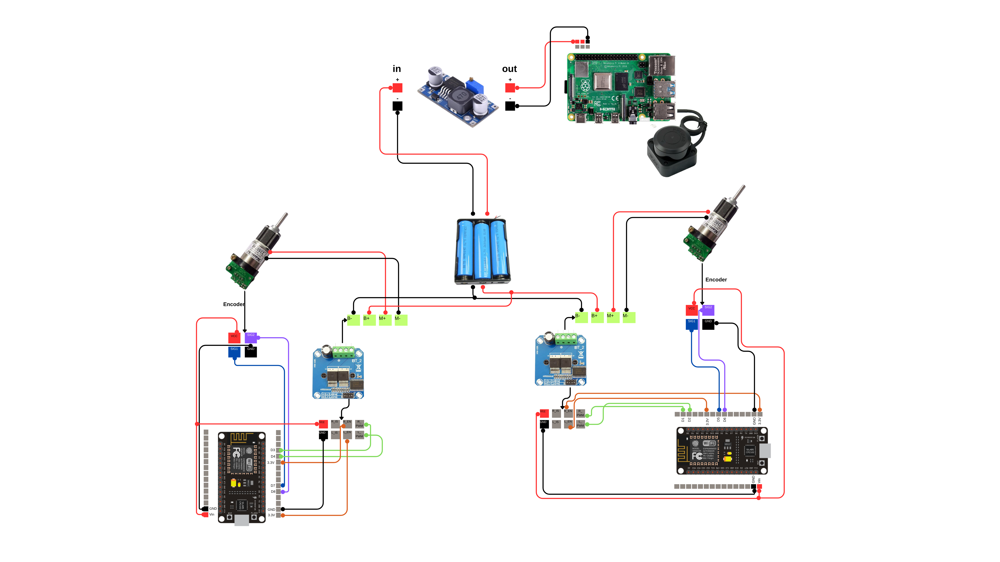
The robot features a differential-drive configuration with two independently driven wheels (65mm diameter, 169mm apart) and a rear caster wheel. During assembly, it became apparent that the standard chassis didn't provide enough clearance for the encoders located at the rear of the motors.
To solve this, custom mechanical mounting brackets were designed using Onshape. The components were modeled to account for motor diameter, encoder length, and chassis clearance, then 3D printed for a perfect fit, ensuring proper weight distribution and cable routing.
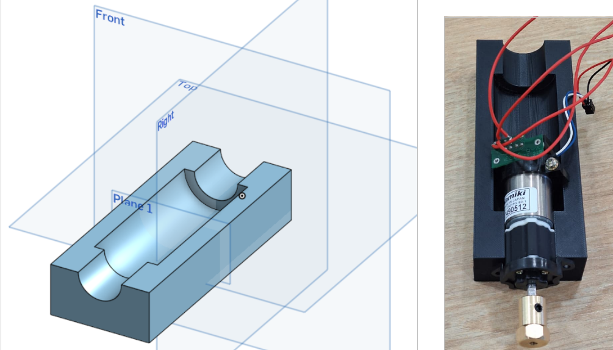
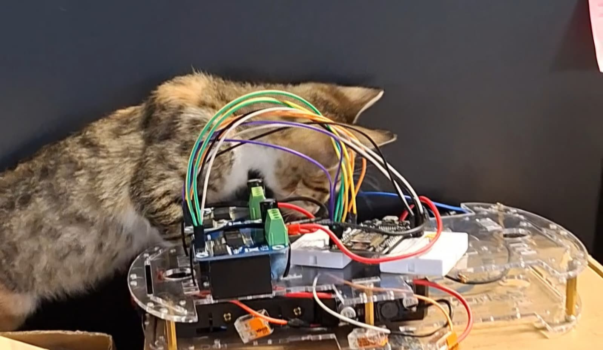
Accurate odometry requires precise encoder readings (approx. 80 pulses per motor revolution, scaled to 640 ticks/rev with 4x quadrature decoding). Initial tests using polling methods missed pulses at high speeds, so a hardware-interrupt approach was adopted.
However, the high-speed ESP32 pins picked up electrical noise, resulting in phantom counts. A dual-layer debounce strategy was implemented:
micros() timer check inside the interrupt service routine (ISR) to ignore signals arriving faster than the physical limits of the motor.The ESP32 runs the control stack using a dual-core architecture: Core 0 handles micro-ROS communication, while Core 1 runs the PID control loop at 10 Hz (100ms period). This isolation guarantees deterministic motor control even if network lag occurs.
Each PID cycle reads encoders via the hardware PCNT module, applies an alpha=0.3 low-pass filter, ramps the target velocity for smooth acceleration (1.5 rad/s max increase), and writes PWM to the IBT-2 drivers. A custom web interface was built to control and monitor the robot directly from a smartphone.
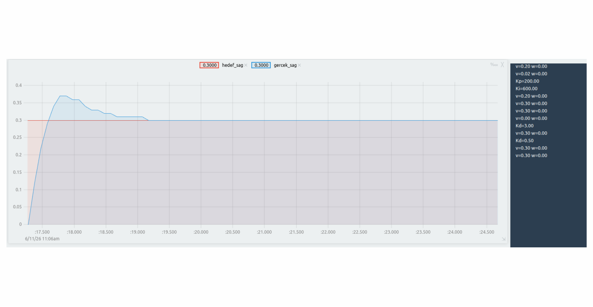
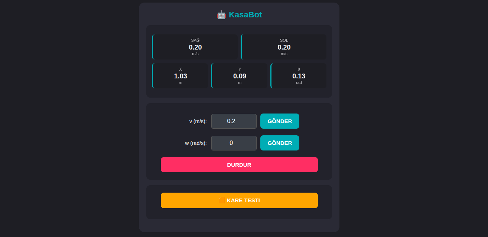
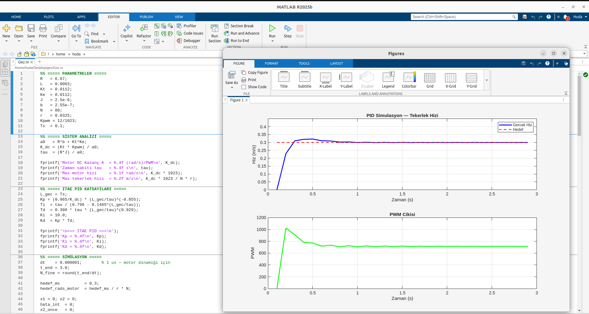
The robot implements inverse kinematics to convert ROS 2 velocity commands (/cmd_vel: linear.x, angular.z) to individual wheel speeds. Forward kinematics uses Euler integration on the encoder readings to estimate the robot's position (x, y, theta), which is published at 20 Hz on the /odom topic.
To verify the accuracy of the wheelbase and wheel diameter parameters, physical "Square Drawing Tests" were conducted. The robot was commanded to drive in a perfect square shape based purely on odometry feedback. The minimal deviation from the starting point verified the mathematical model's accuracy.
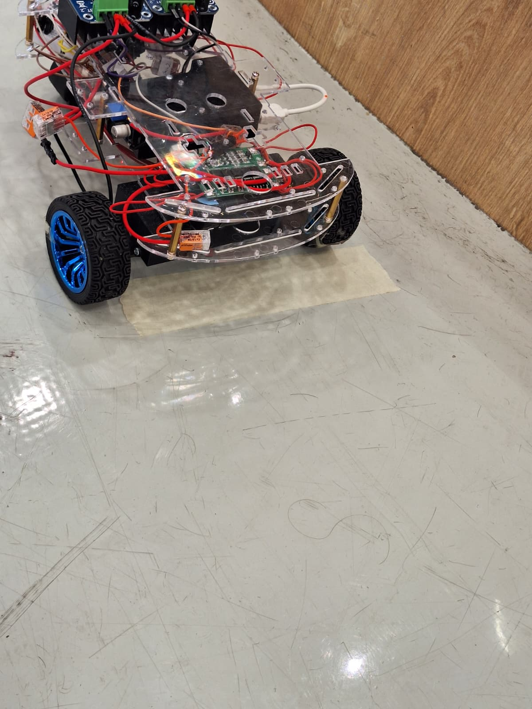
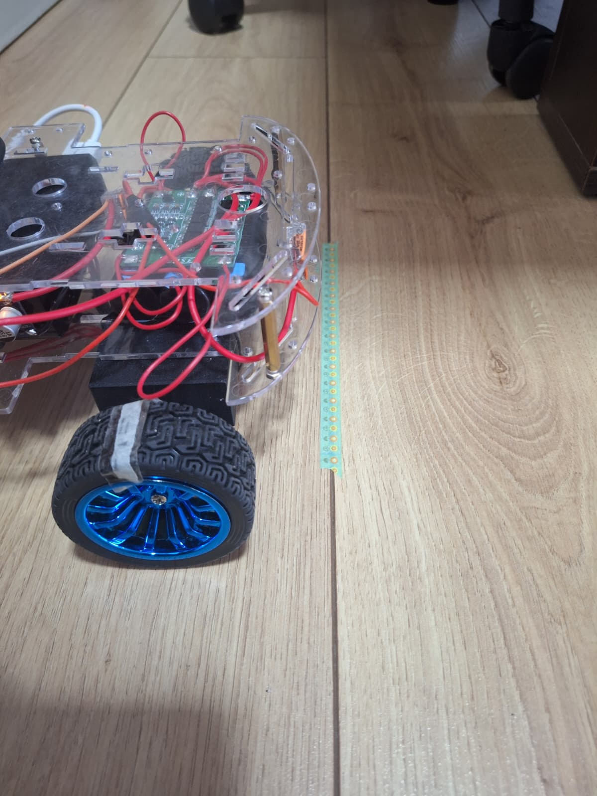
The ESP32 acts as a micro-ROS client, talking to the Raspberry Pi over USB serial at 921,600 baud. A custom state machine handles connection drops, ensuring the motors automatically halt if the ROS 2 connection is lost.
To avoid severe display lag when testing sensors, the system leverages ROS 2's networking capabilities (ROS_DOMAIN_ID=17). Topics published by the Raspberry Pi are streamed natively over the local network and visualized smoothly in RViz or Gazebo on a host laptop during teleoperation.
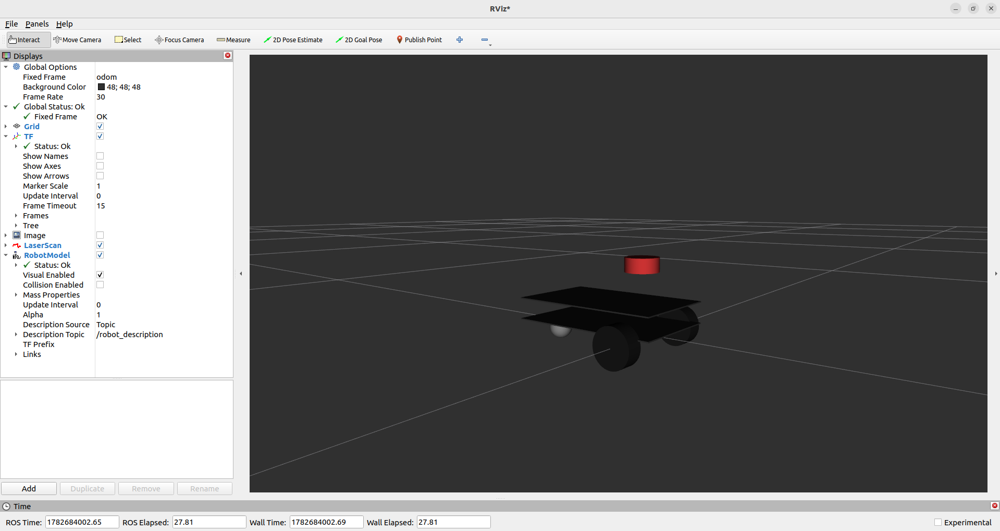
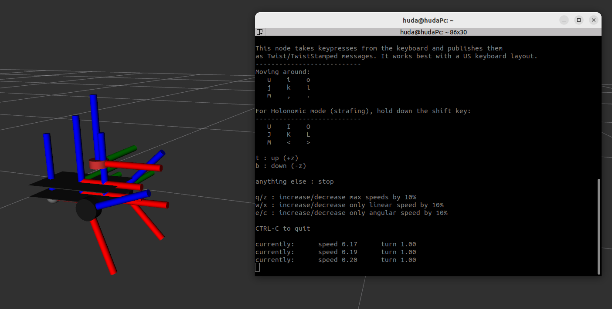
The Gez project is currently in active development. With the base chassis, micro-ROS integration, and low-level PID control completed, the focus has shifted entirely to autonomous navigation and mapping.
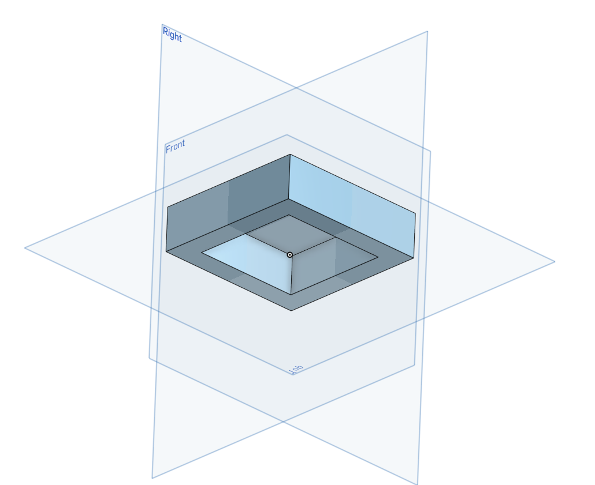